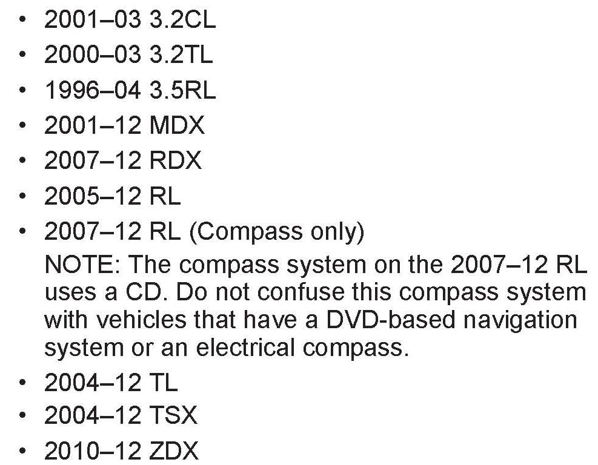
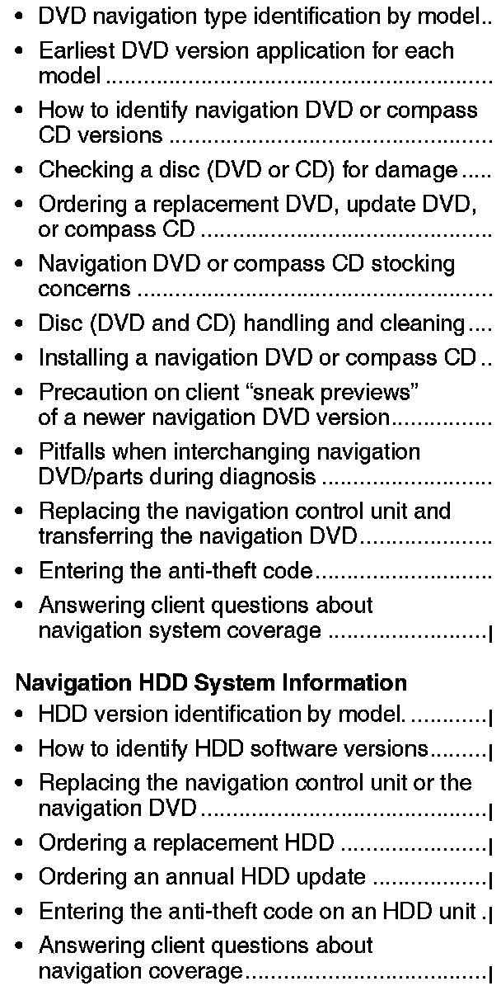

Navigation System - DVD and HDD System Information: Overview
05-018December 10, 2011
Applies To:
See VEHICLES AFFECTED
Navigation System Information
(Supersedes 05-018, dated October 30, 2011; see REVISION SUMMARY)
REVISION SUMMARY
^ Under VEHICLES AFFECTED, 2012 model information was added.
^ Under DVD NAVIGATION TYPE IDENTIFICATION BY MODEL, the Current Update DVD Version was changed for most vehicles, and 2012 model information was added.
^ Under HDD VERSION IDENTIFICATION BY MODEL, the Current Update HDD Version was changed for most vehicles, and 2012 model information was added.
NAVIGATION BACKGROUND
American Honda has two types of navigation system platforms available: navigation DVD and navigation HDD.
For more information about the navigation system and its operation, refer to the following resources:
^ Service Manual - Printed or on ISIS
^ Quick Start Guide or Technology Reference Guide
^ Online University - Use the keyword NAVI.
^ Navigation Manual - Besides the one that comes with the vehicle, the navigation system manual is also available online. Select SEARCH BY PUBLICATION, select Consumer Information, select your applicable vehicle, then select Navigation Manual from the list.
^ Service Bulletins - Use the keyword NAVI.
^ ETM (electrical troubleshooting manual)

VEHICLES AFFECTED
WARRANTY CLAIM INFORMATION
None. This service bulletin is for information only. Refer to the flat rate manual whenever servicing or repairing the navigation system.

DVD Navigation System Information